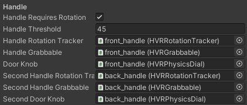

Physics Door Setup
This tutorial will be using the included 'swinging_door' prefab as a guide.
First we setup the door rigidbody. Hopefully your door has the model pivot point set correctly at the side of the door for "hinge rotation". If not place the door as a child of an empty game object and use the empty to set the pivot point. The dummy pivot object would become your rigidbody.
Add the Rigidbody, HVRPhysicsDoor and HVRRotationTracker components to the door.
-

- HVRPhysicsDoor will set the mass and gravity setting of the rigidbody. I use a default of 10 mass as the additional mass helps prevent joint stretching.
- Set the axis of rotation in the door and tracker components. Example door has a up vector of Y for rotation.
- Door Options:
- Start Locked: the door and handles if referenced, will not be openable until the Unlock method is executed on the component.
- The example scene includes an example of this. key_door_setup prefab.
- Door Closing Settings:
- When the door handle is not held, the door will automatically shut all the way if it's angle is lower than the 'Close Angle'
- Close Over Time - the automatic closing will occur over this amount of time.
- Close Detection Time the close sequence will start only if this amount of time has elapsed while the door angle is lower than 'Close Angle'
- SFX
- Audio Clips can play when opened or closed based on the SFX Threshold Angle field.
- The timeout field delays playing the same clip again.
- Joint Limits
- Most doors will limit their rotation, enable Limit Rotation and set the desired min and max angle.
- Joint limit rotation will depend on the axis set. You can use the Target Angular Velocity setting to use torque to rotate the door in play mode to easily test your joint limits. (Requires non zero damper to work).
- Joint Settings
- Adjust the damper to add rotational difficulty (damper brings angular velocity to zero).
- Adjust the spring to control how fast the door will return to it's start rotation.
- Start Locked: the door and handles if referenced, will not be openable until the Unlock method is executed on the component.
-
Next we setup the door handles. If you don't need rotating door handles skip this step. You can add two door handles in v2.8.6 and up.
- Rigidbody (I use mass of 10 for joint stability).
- HVRPhysicsDial - sets up the rotation joint with joint limits, spring, and damper.
- Set the axis of rotation.
- Set the 'Connected Body' to the door rigidbody.
- Assign the desired joint limits based on how far the handle will rotate.
- Joint Settings
- Grabbed Damper - rotation difficulty when held
- Damper - rotation difficulty when not held
- Spring - spring force to return to the starting rotation - 10:1 Spring:Damper ratio is a good starting point.
- HVRRotationTracker - will be used by the door component to detect handle rotation
- Set the axis of rotation
- Other settings can be ignored.
- HVRGrabbable - so we can grab the door handle
- Grabbable Tutorial
- Disable force grabbing (unless you want to open the door handle in style :D)
- Enable Stationary so that the hand will move to the handle on grab.
- HVRPhysicsDoor - assign references
- Enable 'Handle Requires Rotation' and assign the references for one or both handles setup.
- Enablinge 'Hand Requires Rotation' causes the door to latch shut, and it will only unlatch if either handle is rotated beyond 'Handle Threshold' amount of degrees from it's start rotation.
Door Collision
- If you haven't already, you should add collision geometry to your door, frames, and handles.
- Take a look at the swinging_door prefab root. I use the HVRObjectCollisionDisabler component to make sure door parts don't collide with each other.
- Using this component will make all children colliders of the assigned transforms ignore collision with each other.
-

Door Handle Components:

Handle References on HVRPhysicsDoor:
